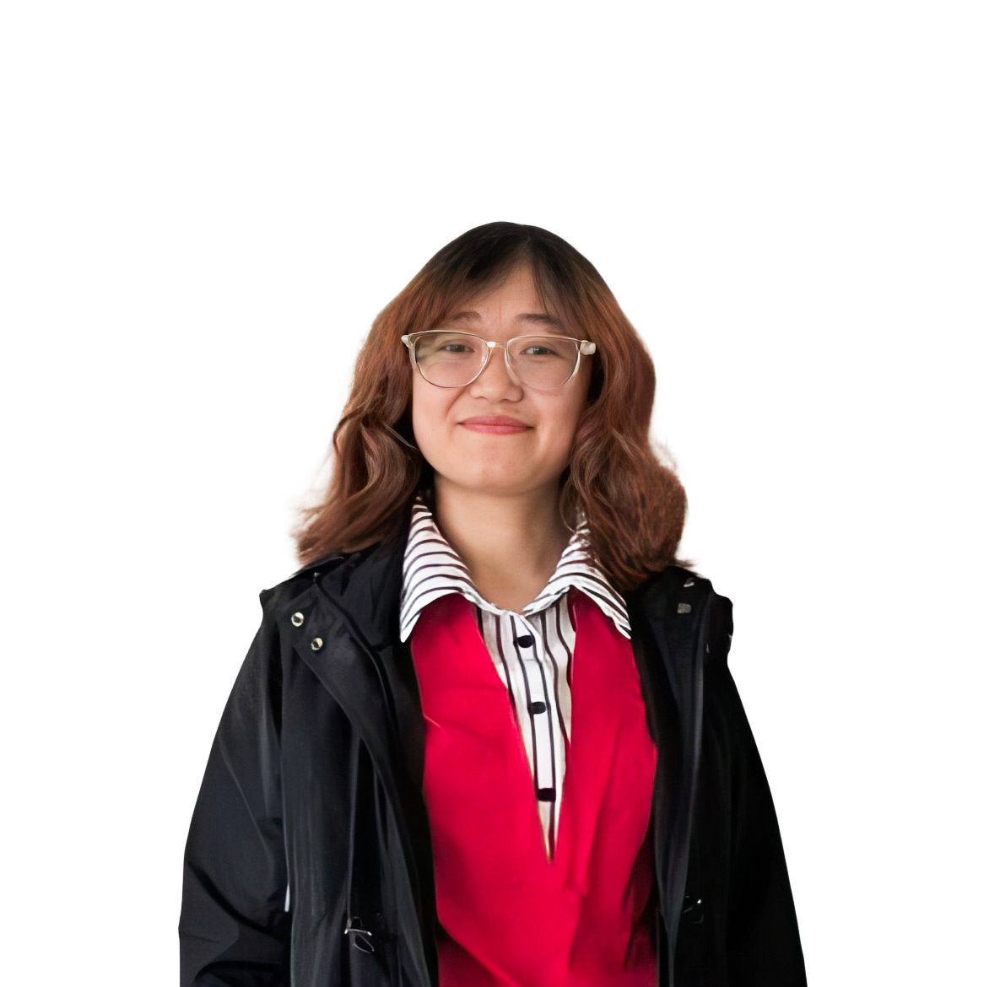
Karisma Yumnam is a third-year Ph.D. student in the Department of Biological Systems Engineering at the University of Nebraska–Lincoln.
Her doctoral research focuses on developing data-driven models for plot-scale, in-season crop yield forecasting using remotely sensed phenotyping data. Her research spans remote sensing for agricultural applications, machine learning, time-series forecasting, crop yield modeling, and data science literacy.
Her long-term research vision is to develop explainable artificial intelligence systems that leverage open-source Earth observation data to support sustainable and data-informed agricultural decision-making.
As a Graduate Research Assistant, she also actively works with undergraduate students, K–12 teachers, and high school students through the Cultivate ACCESS to Data Science program at UNL,
where she helps develop and deliver educational experiences that integrate data science with agriculture.
Prior to her doctoral studies, Karisma had undertaken research projects in tree-fruit production systems, agricultural meteorology, temperature inversions and microclimates, soil water stress assessment using Unmanned Aerial Vehicles (UAVs), hydrological modeling and extreme events. This makes her a holistic researcher with a strong foundation in precision agriculture, hydrometeorology, and climate extremes.
In personal life, she is a multi-faceted individual with diverse pursuits. She is a constantly improving tennis player (NTRP rating: 3.0-3.5), watercolor artist and a 950+ Chess player. She enjoys biking, hiking, reading, gardening and ocasionally cooking new recipes!
| Year | Position |
|---|---|
| July, 2021 – Dec, 2021 | Research Assistant, IIT Roorkee
Developed intensity duration curves for urban catchment in Sao Paulo, Brazil |
| Oct, 2020 – Mar, 2021 | Visiting Scholar,
TUM
Developed SWATmodel in a data-sparse, lowlying catchment in Benin using multisite evapotranspirationcalibration approach. |
| Year | Degree, University |
|---|---|
| 2024-present | Ph.D. in Biosystems Engineering, University of Nebraska-Lincoln |
| 2024 | M.S. in Biosystems Engineering (Agricultural Automaton Eningeering), Washington State University |
| 2021 | M.Tech. in Surface Water Hydrology, Indian Institute of Technology Roorkee |
| 2019 | B.Tech in Agricultural Engineering, Central Agricultural University, Imphal
(Gold Medalist) |
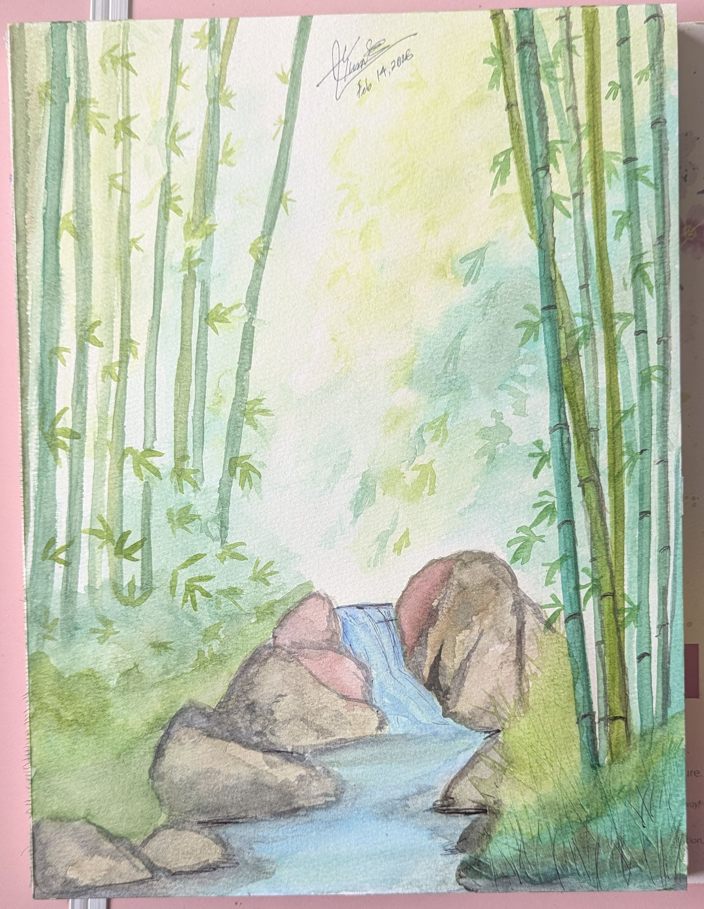
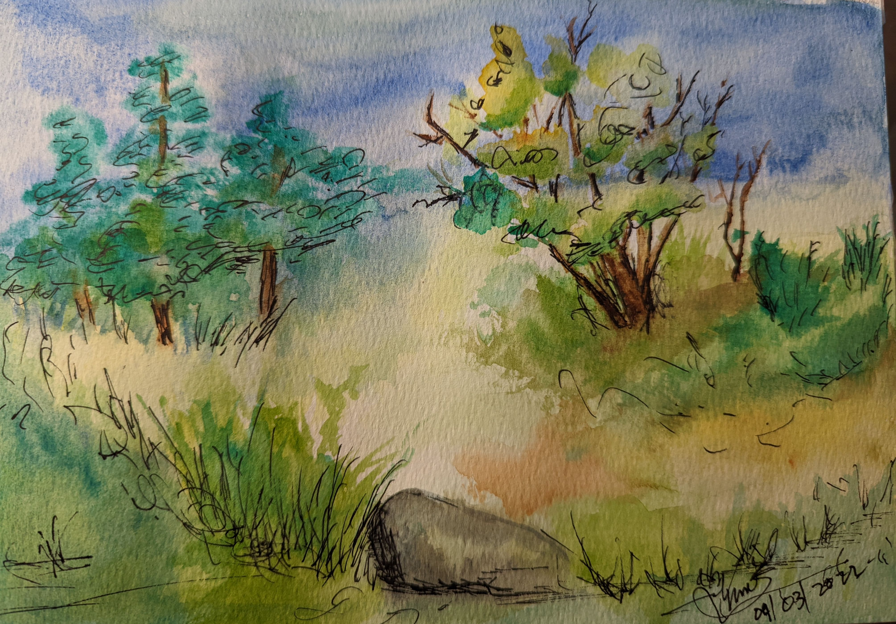
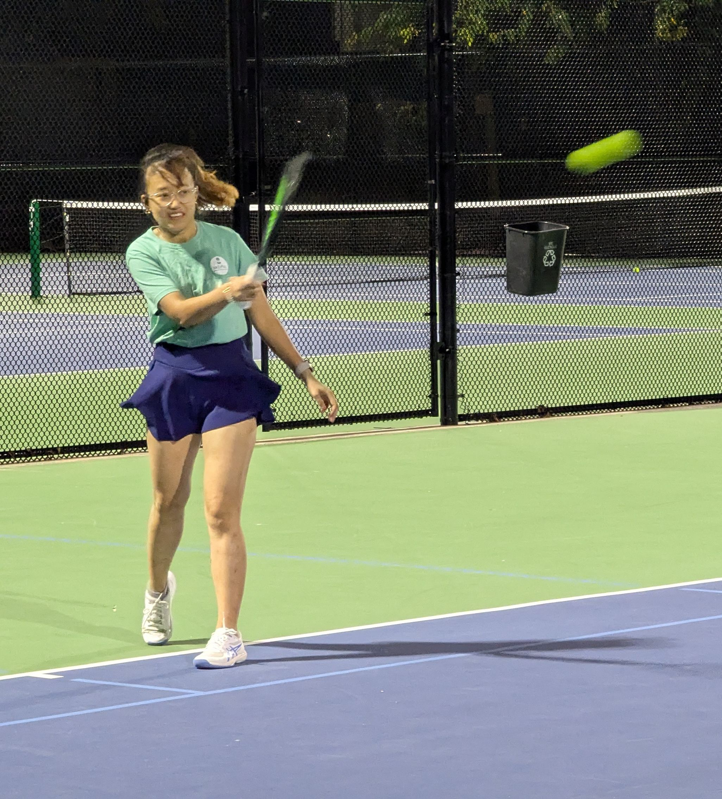
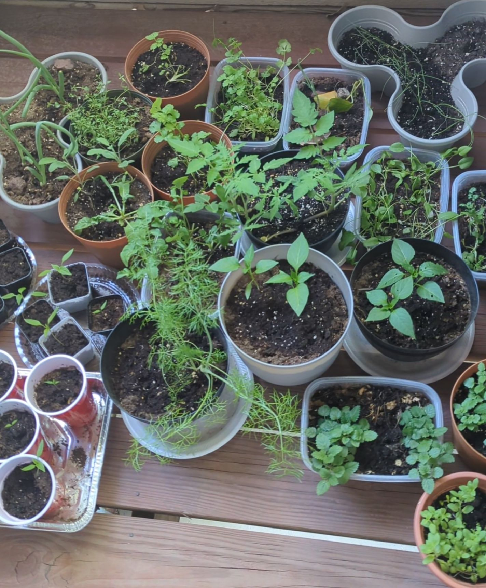
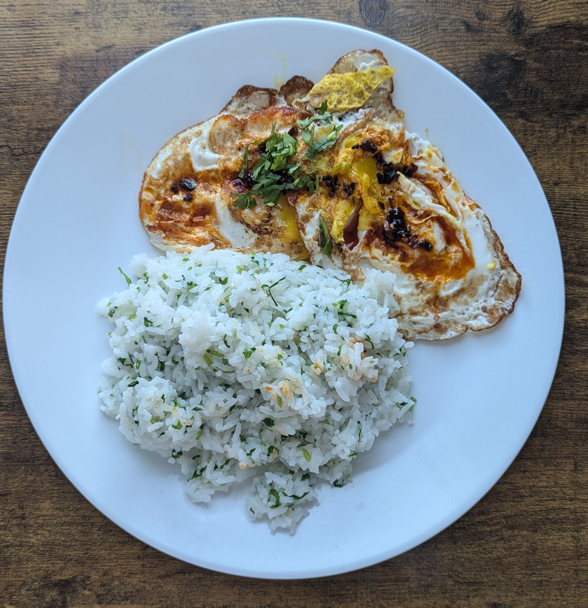
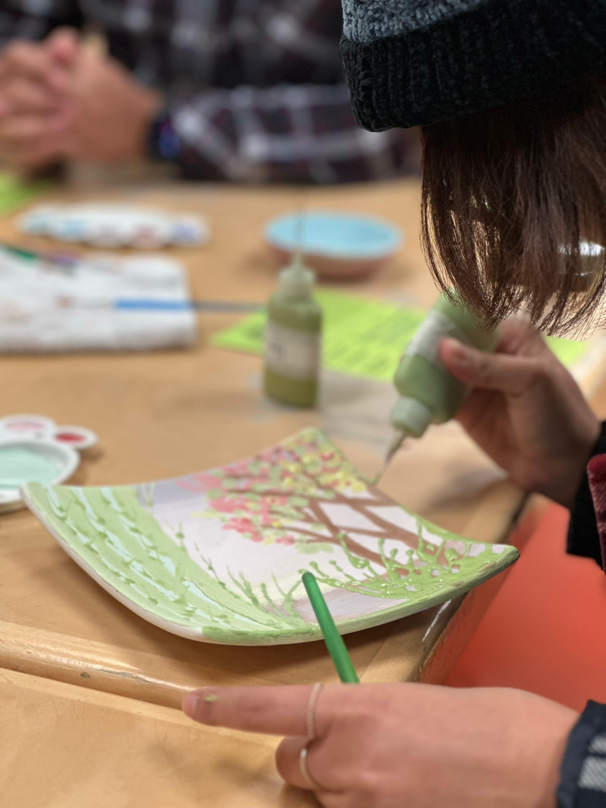
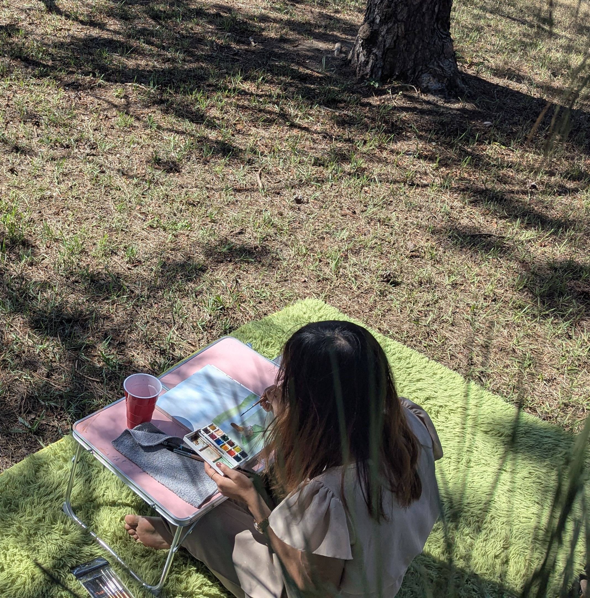
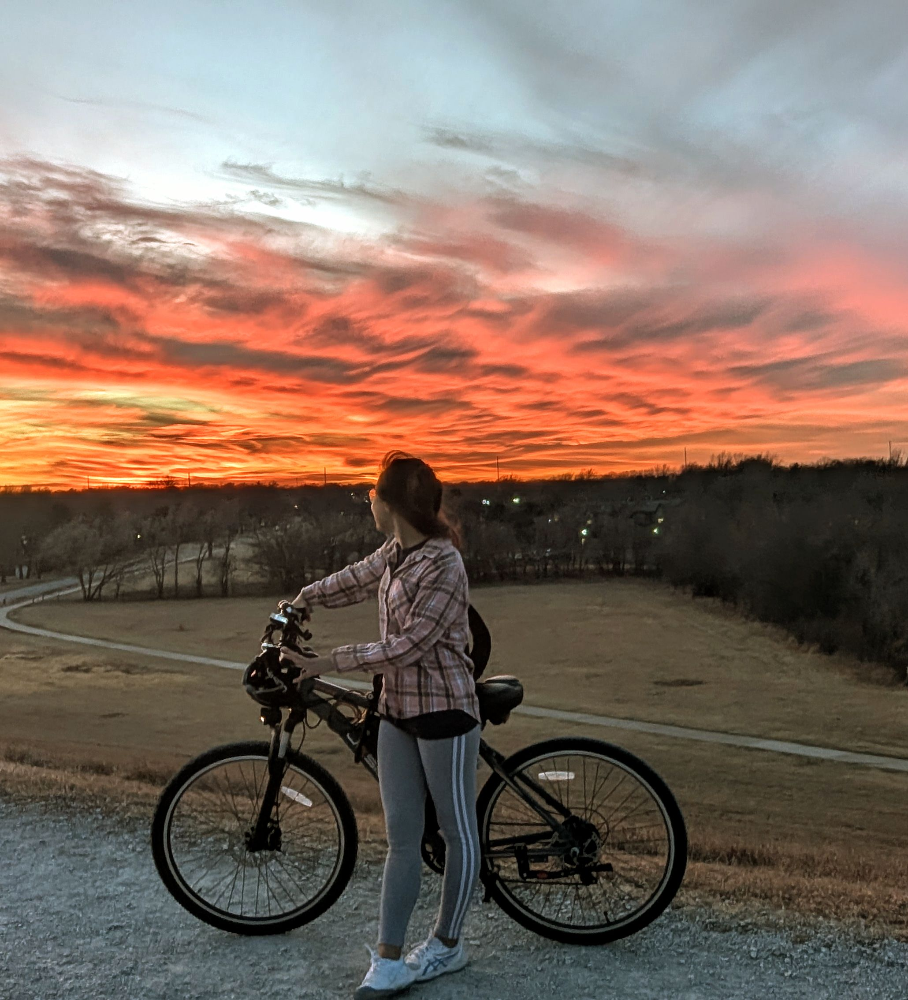
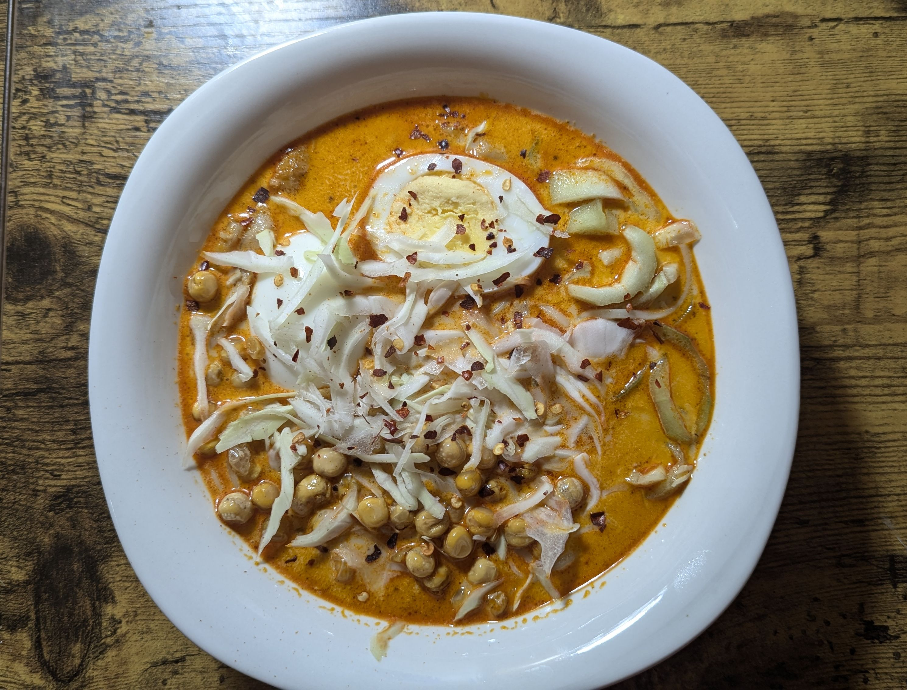
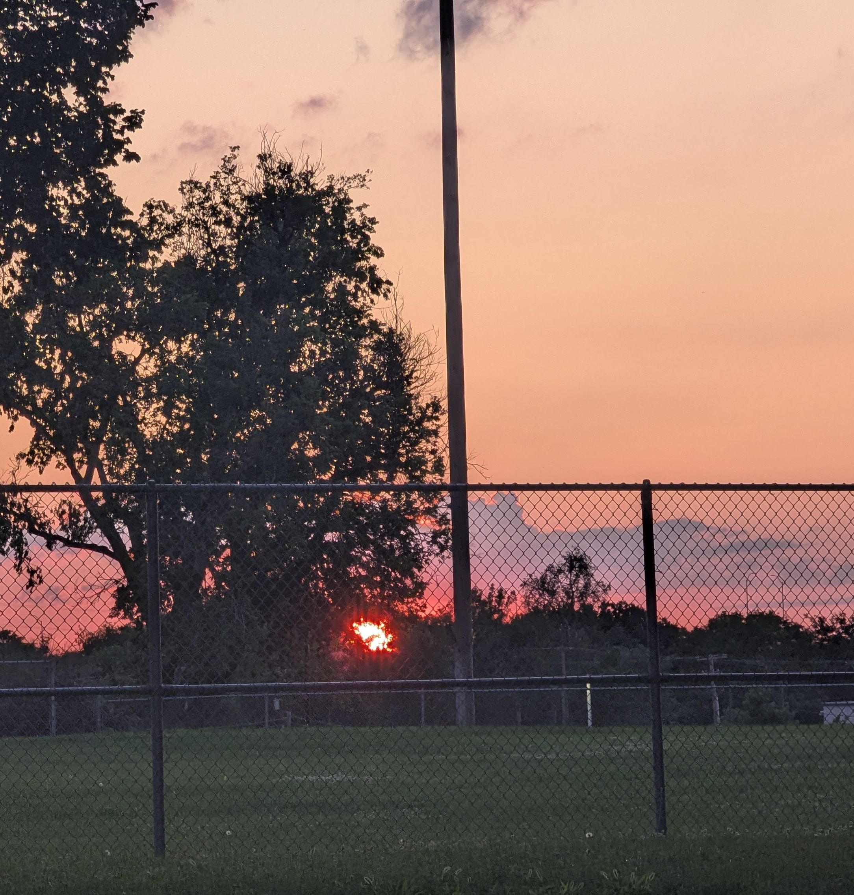